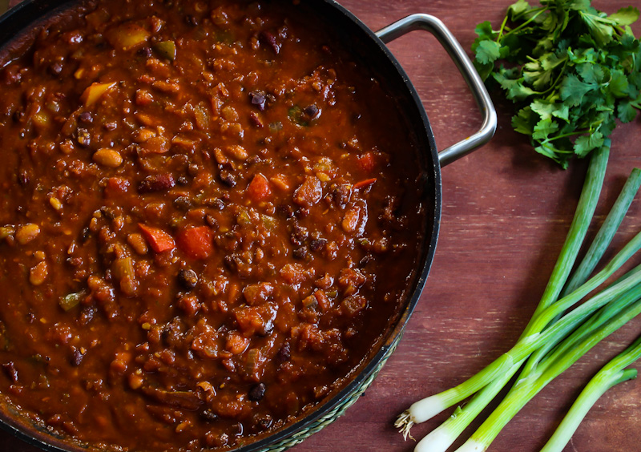

Vegan Chilli

Our healthy vegan chilli recipe packs
in plenty of vegetables and doesn’t
fall short on the flavour front.
Serve it with rice or in jacket
potatoes for a filling supper
- 3 tsp olive oil
- 2 sweet potatoes cut into medium chunks
- 2 tsp smoked paprika
- 2 tsp ground cumin
- 1 onion, chopped
- 2 carrots, chopped
- 2 celery sticks, chopped
- 2 garlic cloves, crushed
- 2 tsp chilli powder
- 1 tsp dried oregano
- 1 tsp tomato puree
- 1 red pepper, cut into chunks
- 2x 400g cans of chopped tomatoes
- 400g can black beans, drained
- 400g can kidney beans, drained
- lime wedges, guacamole and corriander leaves to serve
- Heat the oven to 200C/180C fan/gas 6.
Put the sweet potato in a roasting tin
and drizzle over 1½ tbsp oil, 1 tsp
smoked paprika and 1 tsp ground cumin.
Give everything a good mix so that all
the chunks are coated in spices, season
with salt and pepper, then roast for 25
mins until cooked.
- Meanwhile, heat the remaining oil in a
large saucepan over a medium heat. Add
the onion, carrot and celery. Cook for
8-10 mins, stirring occasionally until
soft, then crush in the garlic and cook
for 1 min more. Add the remaining dried
spices and tomato purée. Give everything
a good mix and cook for 1 min more.
- Add the red pepper, chopped tomatoes and
200ml water. Bring the chilli to a boil,
then simmer for 20 mins. Tip in the beans
and cook for another 10 mins before adding
the sweet potato. Season to taste then serve
with lime wedges, guacamole, rice and
coriander. Will keep, in an airtight
container in the freezer, for up to
three months.